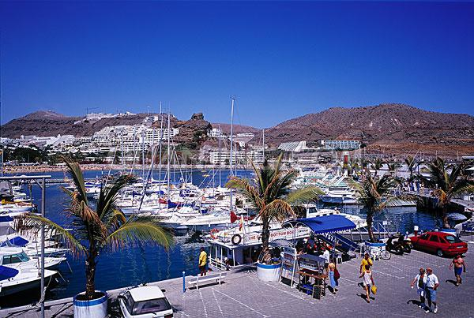

<!doctype html>
<html>
<head>
<meta charset="UTF-8">
<title>BlogPost template by Adobe Dreamweaver CC</title>
<link href="BlogPostAssets/styles/blogPostStyle.css" rel="stylesheet" type="text/css">
<style type="text/css">
#mainwrapper #content #mainContent h3 strong {
	font-family: Cambria, Hoefler Text, Liberation Serif, Times, Times New Roman, serif;
}
#mainwrapper #content #mainContent p span {
	font-family: Cambria, Hoefler Text, Liberation Serif, Times, Times New Roman, serif;
}
#mainwrapper #content #mainContent #authorInfo p {
	font-family: Cambria, Hoefler Text, Liberation Serif, Times, Times New Roman, serif;
}
#mainwrapper #content footer article h3 span {
	font-family: Cambria, Hoefler Text, Liberation Serif, Times, Times New Roman, serif;
}
#mainwrapper #content #mainContent p {
	font-family: Cambria, Hoefler Text, Liberation Serif, Times, Times New Roman, serif;
}
#mainwrapper #content #mainContent p span {
	font-family: Gill Sans, Gill Sans MT, Myriad Pro, DejaVu Sans Condensed, Helvetica, Arial, sans-serif;
}
#mainwrapper #content #mainContent p span {
	font-family: Segoe, Segoe UI, DejaVu Sans, Trebuchet MS, Verdana, sans-serif;
}
</style>
<!--The following script tag downloads a font from the Adobe Edge Web Fonts server for use within the web page. We recommend that you do not modify it.--><script>var __adobewebfontsappname__="dreamweaver"</script><script src="http://use.edgefonts.net/montserrat:n4:default;source-sans-pro:n2:default.js" type="text/javascript"></script>
</head>

<body>
<div id="mainwrapper">
  <header> 
    <!--**************************************************************************
    Header starts here. It contains Logo and 3 navigation links. 
    ****************************************************************************-->
    <div id="logo"><font color="#000000"><!--  --><!-- Company Logo text -->Puerto Rico</font></div>
    <nav><a href="../Home.html">Home</a><a href="../Contents.html">Contents</a></nav>
  </header>
  <div id="content">
    <div class="notOnDesktop"> 
      <!-- This search box is displayed only in mobile and tablet laouts and not in desktop layouts -->
      <input type="text" placeholder="Search">
    </div>
    <section id="mainContent"> 
      <!--************************************************************************
    Main Blog content starts here
    ****************************************************************************-->
      <h1><!-- Blog title --><span style="color:orange">Relationship with China</span></h1>
      <h3><!-- Tagline -->Trade and Immigration</h3>
      <h3 style="color:black"><!-- Tagline -->
      <strong>&gt;&gt; Trade</strong>      </h3>
      <div id="bannerImage">Puerto Rico's Harbor</div>
      <p><span style="font-family:Times New Roman">Puerto Rico has an important relationship on the import of China. China was Puerto Rico’s No. 1o largest export country, and No. 5th import country. The amount of goods transported from Puerto Rico to China is ranked No.33rd in the 50 states of US.</span><span style="color:orange">*</span></p>
      <p><span style="font-family:Times New Roman">The goods that are transported to China are mainly <strong><span style="color:orange">products, computer and electronic products, transporting equipment and Electrical &amp; Electronic Parts.</span></strong></span></p>
      <p><span style="font-family:Times New Roman">The goods that export to Puerto Rico from China are mainly <b><span style="color:orange">computer and electronic products,chemical products, plastic product, furnitures and metal products.</span></b></span></p>
      <p><span style="color:black"><strong>&gt;&gt;Immigration</strong></span></p>
      <p style="font-family:Times New Roman">Chinese Puerto Ricans are involved in operating Chinese restaurants, and others work in other sectors. Many members of Puerto Rico's Chinese minority have integrated both Puerto Rican and Chinese cultures into their daily lives. Some Chinese have intermarried with Puerto Ricans and many of today's Chinese-Puerto Ricans have Hispanic surnames and are of mixed Chinese and Puerto Rican descent, e.g., Wu-Trujillo.<span style="color:orange">^</span></p>
      <p style="font-family:Times New Roman">Various businesses are named <b><span style="color:orange">Los Chinos</span></b> (The Chinese) and a valley in Maunabo, Puerto Rico is called Quebrada Los Chinos (The Chinese Stream). The Padmasambhava Buddhist Centre, whose followers practice Tibetan Buddhism, has a branch in Puerto Rico<span style="color:orange">#</span>.</p>
      <p style="font-family:Times New Roman">Los Chinos de Ponce (English: &quot;The Chinese from Ponce&quot;), formally &quot;King's [Ice] Cream&quot;, is an ice cream store whose owners are descendants of Chinese immigrants who arrived in Puerto Rico via Cuba in the early 1960s. The ice cream parlor, which is in front of the town square, Plaza Las Delicias, opposite the historic Parque de Bombas, opened in 1964. <span style="color:orange">&amp;</span></p>
      <div id="bannerImage2">
        <div id="act">First Page of Chinese Exclusion Act</div>
        <p style=font-family:Times New Roman"">Illegal immigration of Chinese nationals has become a problem in Puerto Rico. On November 28, 2007, the United States Immigration and Customs Enforcement (ICE) announced that 15 citizens of the People's Republic of China were arrested and indicted for human smuggling. According to the indictment, the defendants participated in an alien smuggling organization operating out of the Dominican Republic and Puerto Rico. The organization was transporting, moving, concealing, harboring and shielding aliens. They arranged the transportation and moving of Chinese nationals from the Dominican Republic into the United States.<span style="color:orange"> @</span></p>
        <p>
          <aside id="authorInfo"> 
            <!-- The author information is contained here -->
          </aside>
        </p>
        <aside id="authorInfo">
          <h2 style="color:orange">Reference</h2>
          <p>*Trade: Consulate-general of the People’s Republic of China<br>
            http://www.fmprc.gov.cn/ce/cght/chn/zjlq/t1078340.htm        </p>
          <p>Picture From: http://welcome.topuertorico.org/economy.shtml</p>
          <p>^&quot;Gender Differentials in Intermarriage Among Sixteen Race and Ethnic Groups&quot;; by: Jerry A. Jacobs and Teresa G. Laboy; Sociological Forum; Vol. 17, No. 4; December 2002</p>
          <p>#Quebrada Los Chinos,Budda Net</p>
          <p>&amp; Barrio Sabanetas, Plaza las Delicias, Parque de Bombas and Helados Chinos., Journey Tos - blog, 2 August 2009. Retrieved 25 June 2012.</p>
          <p>@  &quot;ICE dismantles Chinese human smuggling organization&quot;</p>
          <p>&nbsp;</p>
        </aside>
      </div>
    </section>
    <footer> 
      <!--************************************************************************
    Footer starts here
    ****************************************************************************-->
      <article>
        <h3><span style="color:orange">Helen: Puerto Rico's Trade with China， Website Design</span>      </h3>
      </article>
      <article> </article>
      <article>
        <h3><span style="color:orange">Evita: Immigration from China to Puerto Rico</span></h3>
      </article>
    </footer>
  </div>
  <div id="footerbar"><!-- Small footerbar at the bottom --></div>
</div>
</body>
</html>
